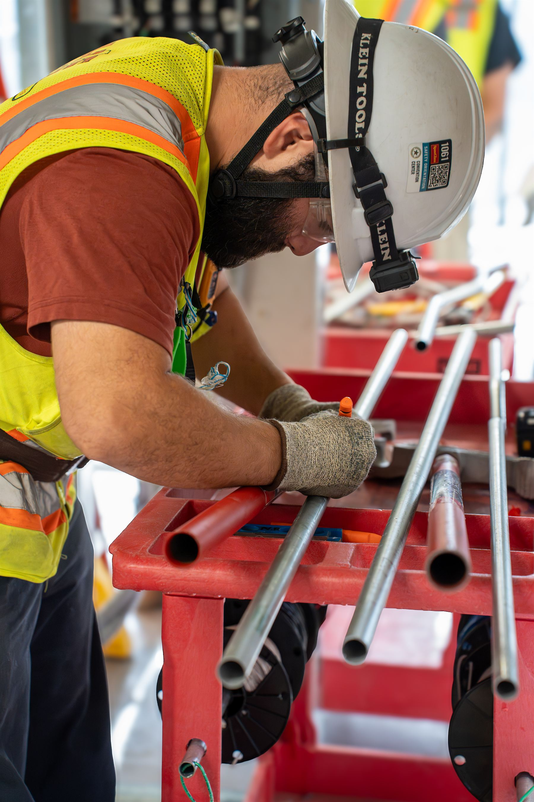
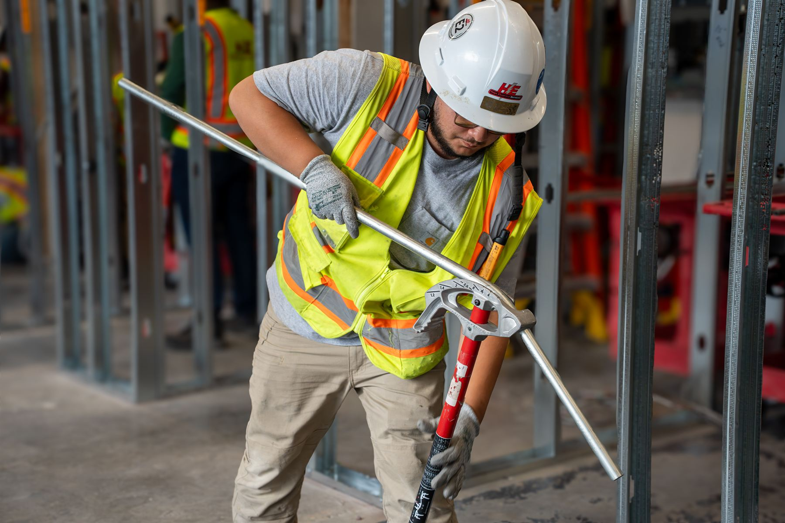
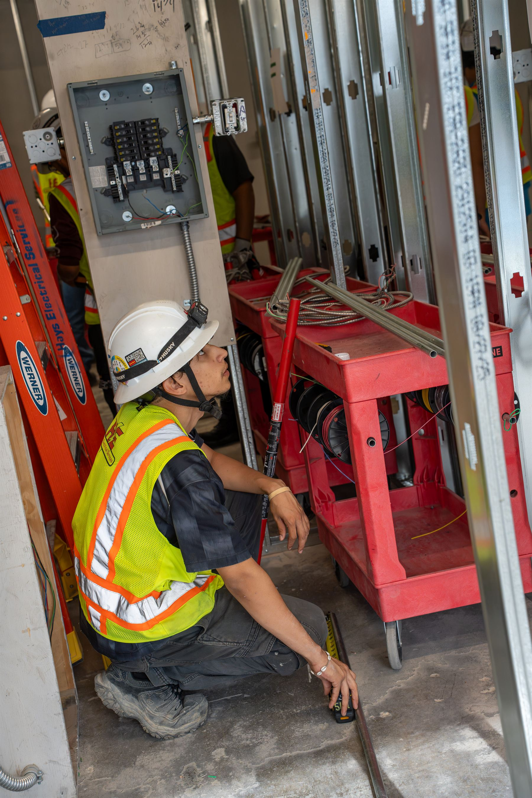
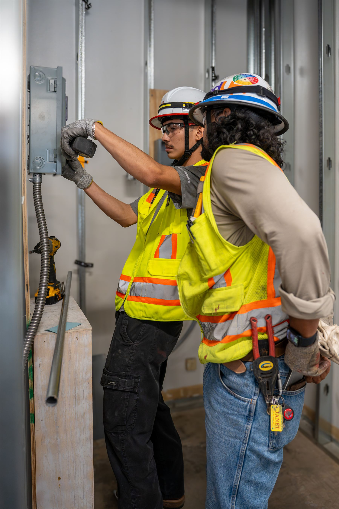
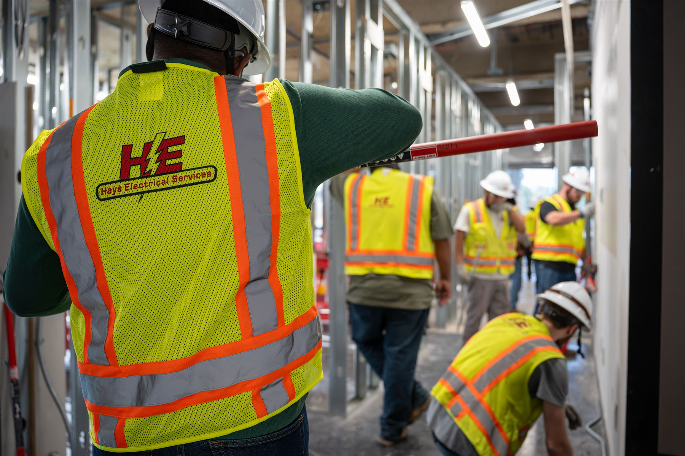
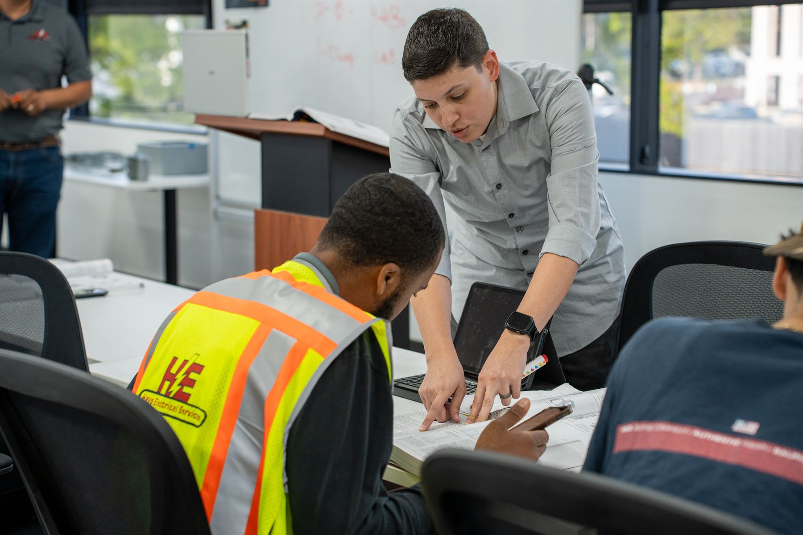
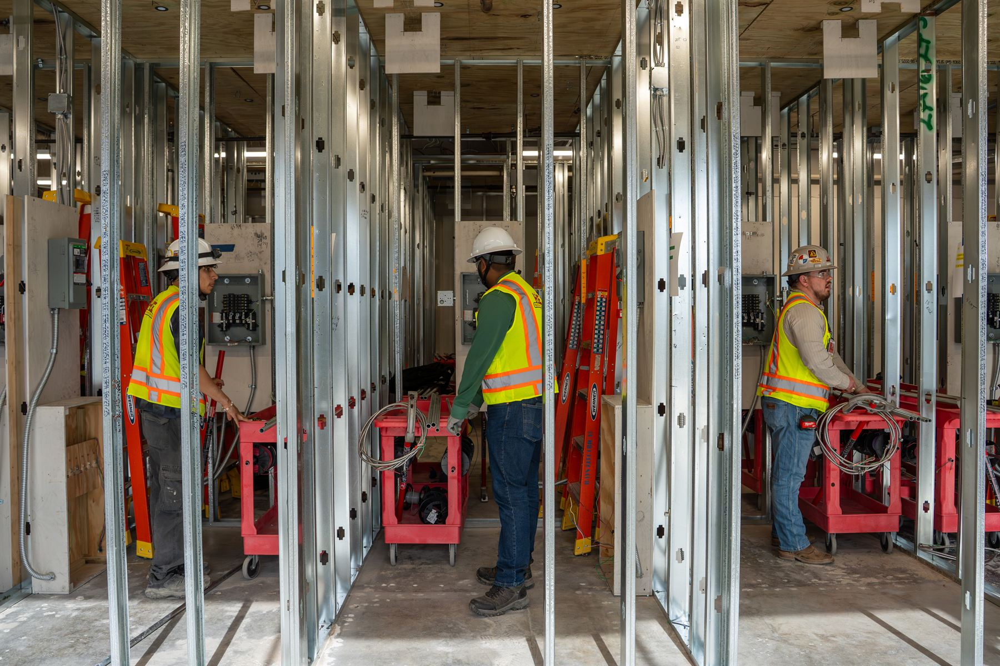
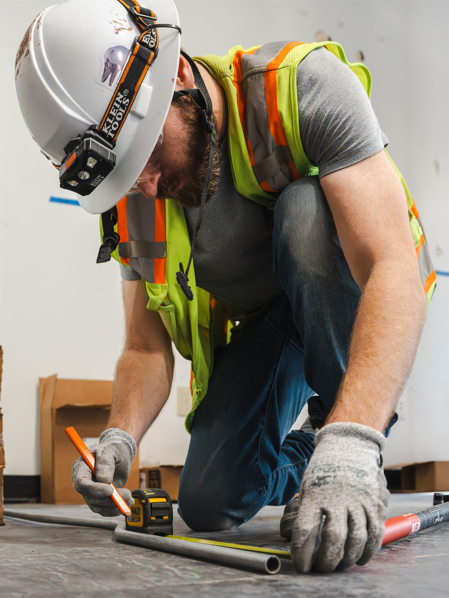
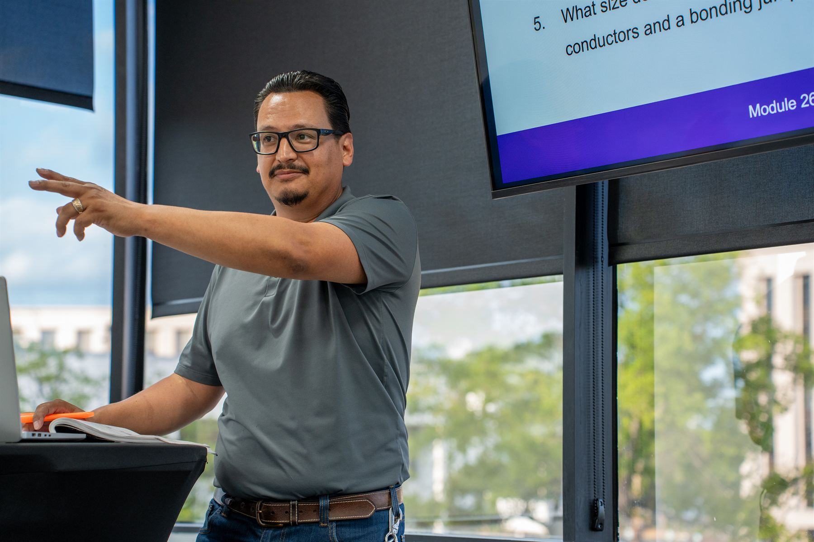
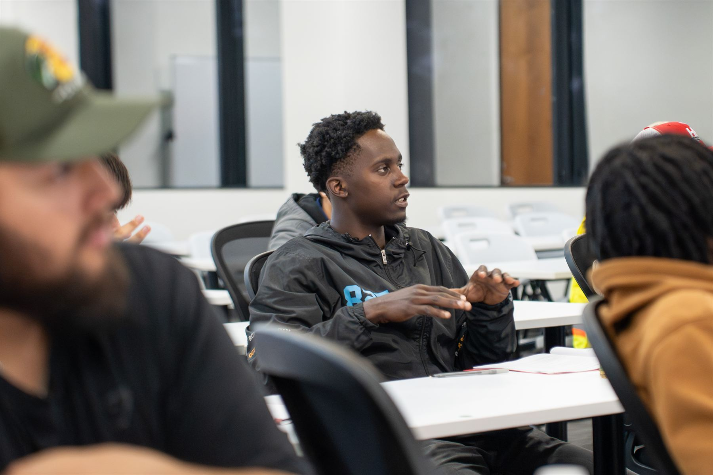

Year 1
Foundations
Safety, tools, basic electrical concepts, and the skills needed to work safely around electrical systems and equipment.
5K Electrical Apprenticeship Program
A four-year, earn-while-you-learn program for employees who want to become licensed electricians. The program is registered with the U.S. Department of Labor and uses the NCCER electrical curriculum.
Apprentices learn in the classroom, practice skills in the lab, and gain real experience on electrical jobsites. They also learn from experienced journeyman electricians — and keep a paycheck while they build the skills, safety knowledge, and work habits the trade requires.

Program overview
Learning to be an electrician takes time and practice. Each year builds on what apprentices learned the year before.

Safety, tools, basic electrical concepts, and the skills needed to work safely around electrical systems and equipment.

Stronger installation skills, electrical knowledge, blueprint reading, and completing work with greater accuracy and less help.

More advanced electrical work, troubleshooting, and math. Apprentices may also begin helping newer apprentices learn.

Solve problems, help lead crews, plan materials, and support safe, quality electrical work.
What you’ll learn
The program uses the National Center for Construction Education and Research (NCCER) electrical curriculum and is registered with the U.S. Department of Labor. The curriculum gives apprentices a clear plan for learning the trade.
Apprentices also complete hands-on activities, assignments, quizzes, tests, and exams during the program.

Training schedule
Apprentices learn new skills in class and practice them in the lab. They also use those skills while working on electrical jobsites. Past education and electrical work experience may help decide where an apprentice starts. Some eligible apprentices may be able to test out of certain levels.


Earn while you learn
Apprentices learn skills in the classroom and lab, then use those skills on the job. As they gain experience, they can take on more advanced electrical work and more responsibility.
The program gives employees a clear way to learn the trade while working and earning a paycheck.
Credentials
The training may also help apprentices work toward other industry credentials and licenses during their careers.

Requirements
Past education and electrical work experience may help decide where an apprentice starts in the program. New enrollment dates are published only when they are provided and approved.
Skills for success
Good electricians need technical skills and good work habits. Apprentices are expected to:
These expectations apply in the classroom, in the lab, on the jobsite, and any time they’re representing Hays.
Career path
There is no single career path. The right path can depend on an employee’s skills, experience, interests, and goals. 5K Training & Development also offers continued education for employees preparing for journeyman licensing, field leadership, project management, and other roles.
Field leadership
Step into more responsibility with the crew.
Coordinate the day’s work, safety, and quality.
Lead the project and the people on it.
Other paths
Ready to learn more?
Contact the 5K Training & Development team for information about enrollment, program requirements, or how the apprenticeship works.
